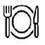
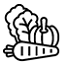

PIZZA
DIFICULDADE


PREPARO:
60 MIN

RENDIMENTO:
2 PORÇÕES

INGREDIENTES
MASSA
- 1 xícara (chá) de água morna
- 10g de fermento biológico instantâneo
- 1/2 colher (sopa) de açúcar
- 1/2 colher (sopa) de sal
- 1/2 xícara (chá) de óleo
- 3 xícaras (chá) de farinha de trigo
COBERTURA 4 QUEIJOS
- 200g de queijo mussarela ralado
- 100g de provolone ralado grosso
- 50g de queijo parmesão ralado
- 50g de gorgonzola amassado
- 1 caixinha de molho branco Mococa
- Molho de tomate e orégano a gosto

MODO DE PREPARO
MASSA
- Misture a farinha com o fermento, o açúcar e o sal, abra uma cova e acrescente a água e óleo.
- Trabalhe a massa com as mãos até alisar, se necessário, acrescente mais farinha aos poucos.
- A massa deve ficar macia e bem maleável. Faça 2 bolas de massa, deixe em um prato polvilhado com farinha de trigo (polvilhe também a massa com farinha) e cubra com papel filme e um pano de prato, espere até ela ficar fofa.
- Com o auxílio de um rolo, abra o disco em mesa polvilhada com farinha.
- Coloque a massa em 2 formas de pizza de 35cm de diâmetro untada com óleo, preenchendo toda a forma.
- Pré-aqueça o forno em temperatura alta (210ºC) por 10 minutos.
- Leve a massa ao forno por aproximadamente 4 minutos para dourar levemente.
COBERTURA
- Espalhe pela massa o molho de tomate. Em um recipiente misture os queijos com o molho branco e coloque sobre o molho de tomate, polvilhe com orégano e leve ao forno em temperatura alta.
MONTAGEM
- Abra a massa numa assadeira quadrada ou redonda.
- espalhe o molho de tomate.
- Faça uma camada de queijo mussarela.
- Faça uma camada com queijo provolone.
- Faça uma camada com queijo parmesão.
- Faça uma camada com queijo gorgonzola.
- Leve ao forno até o queijo derreter, observando a massa dourar embaixo.
- Polvilhe um pouco de orégano e sirva.
Voltar